Before we start with our day on Data Visualisation, create a new R script file named data-visualisation.R in the folder R/. This will be the file containing the R code related to Data Visualisation.
In this tutorial you’ll learn:
How to map variables in tidy data sets to visual attributes of graphics, called aesthetics in {ggplot2}.
How to make different plot types by using different “geometries”, called geoms in {ggplot2}.
How to tweak the style of your plots.
How to export your plots to files (JPEG, PNG, PDF or SVG).
How to make article figures by combining several plots together using the {patchwork} package.
The crabs and quadrats data sets
Exercise 3.1
Start by loading required packages: {tidyverse}, {here} and {patchwork}. Note that the {tidyverse} package already includes the {ggplot2} package.
Read in the two tidy data sets generated yesterday: crabs and quadrats. Use the function readRDS() to read the respective .rds files from the folder data-tidy/.
Note how the categorical variable species has been mapped onto the x-axis, and the number of crabs n to the y-axis.
To perform the mapping we used the function aes() and then passed the result to the mapping parameter of the function ggplot(). We can pry on what kind of information aes() is generating by evaluating it here in isolation:
Also note that the observational unit of the data set nr_crabs_by_species is now the species, not an individual crab as we had in the case of the crabs data set. So we have three observations (each species), and each one corresponds to one bar in the plot.
Okay, so you’ve re-mapped the x-axis to the sex variable in the nr_crabs_by_sex data set.
Exercise 3.4
Can you visually show the crab abundance by species and sex in the same plot? If you look at the plot, what does it tell you about how easy it might be to distinguish female and male crabs across species in the field?
Tip: pay attention to the number of NA values in each species.
To determine the number of crabs by species and sex, just use dplyr::count() to count the number of crabs and ask for the combination of values for species and sex:
dplyr::count(crabs, species, sex)
# A tibble: 8 × 3
species sex n
<fct> <fct> <int>
1 Afruca farensis female 1219
2 Afruca farensis male 1223
3 Afruca farensis <NA> 78
4 Uca olhanensis female 1758
5 Uca olhanensis male 1834
6 Uca olhanensis <NA> 148
7 Ucides alvorensis female 533
8 Ucides alvorensis male 533
And now we can make a new bar plot with the following mappings:
species maps to bars’ x-position.
sex maps to fill colour of the bars (the fill aesthetic).
n maps to number of crabs, as usual.
Solution to Exercise 3.4
nr_crabs_by_sp_sex <-count(crabs, species, sex)ggplot(data = nr_crabs_by_sp_sex, mapping =aes(x = species, y = n, fill = sex)) +geom_col()
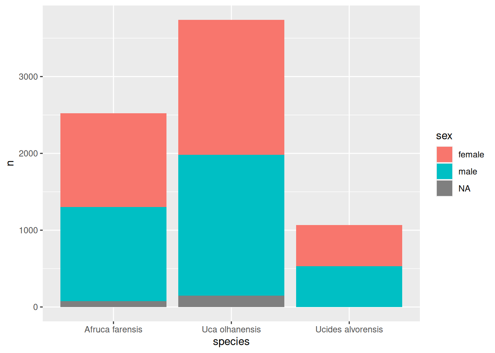
Nice! We got a stacked bar plot. sex is now mapped on the fill colour in the bar plot. Here are variations (V1-V5) on how we could tweak the width and positioning of the bars regarding the sex variable.
nr_crabs_by_sp_sex %>% tidyr::complete(species, sex, fill =list(n =0)) %>%ggplot(mapping =aes(x = species, y = n, fill = sex)) +geom_col(position =position_dodge2(preserve ="single"))
Exercise 3.5
The latest plots were showing three variables:
species on the x-axis
sex as fill colour
n on the y-axis
Let us see how far we may go by mapping more variables to other aesthetics. Besides the variables species and sex, stage (crab developmental stage) is also an important demographics’ variable. Let us add that too to the mix. There is an aesthetic called colour that adjusts the colour of the bar outline.
So, try to make a new plot where, in addition, the colour aesthetic is mapped to stage.
Solution to Exercise 3.5
count(crabs, species, sex, stage) %>%ggplot(mapping =aes(x = species, y = n, fill = sex, colour = stage)) +geom_col(position ="dodge2")
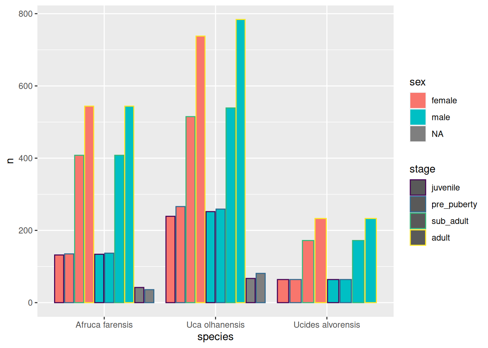
What an ugly plot! Perhaps trying to fit too many variables into one single plot may not be such a great idea.
Exercise 3.6
There is one powerful technique to improve readability of your plots. If one plot is not enough, make several! This can be achieved with faceting. Faceting is the process of creating several related plots, each in their own facet (panel).
Here is an example of three facets, one for each species:
Now, try to make the ugly plot again, but now using only three aesthetic mappings while leaving the species to be varied across facets:
Solution to Exercise 3.6
ggplot(data =count(crabs, species, sex, stage), mapping =aes(x = sex, y = n, fill = stage)) +geom_col(position =position_dodge2(preserve ="single")) +facet_wrap(vars(species))
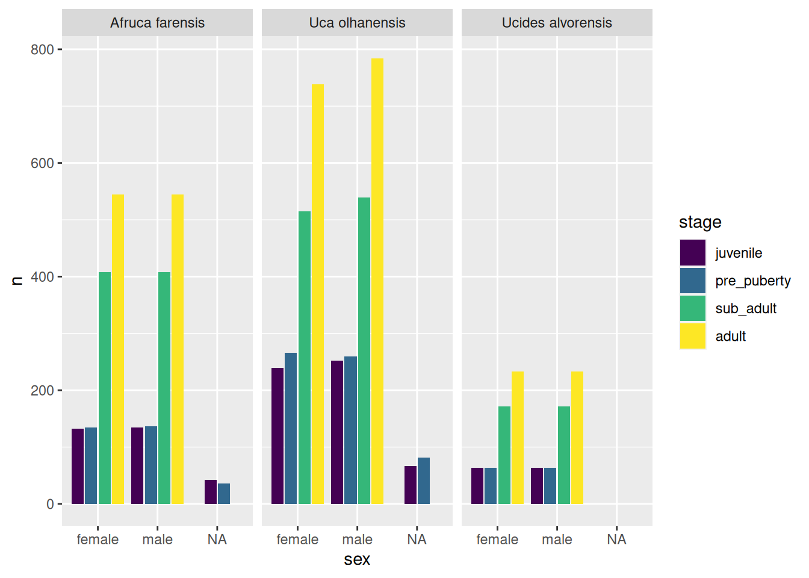
Hooray! Four variables shown in not such a complicated way. But we can do better…
Exercise 3.7
Let us draw five variables: species, sex, stage, season and n. We can use faceting in 2D: rows and columns. Take a look at the solution below.
Solution to Exercise 3.7
count(crabs, species, sex, stage, season) %>%ggplot(mapping =aes(x = sex, y = n, fill = stage)) +geom_col(position =position_dodge2(preserve ="single")) +facet_grid(rows =vars(season), cols =vars(species))
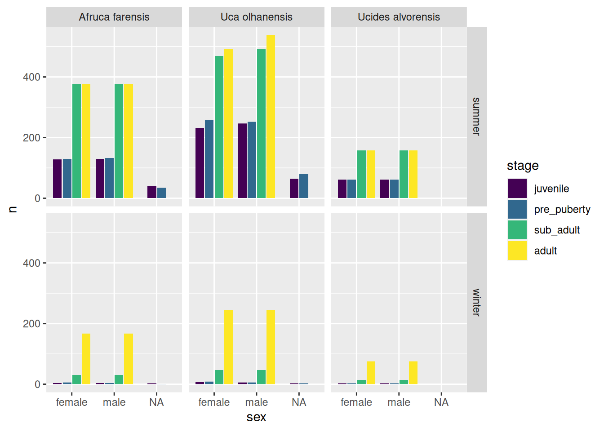
Based on this plot can you tell:
What developmental stages are more abundant? Sexual maturation of the fiddler crabs occurs from pre_puberty to sub_adult. It seems there is quite a significant different between the abundance of the stages prior to sexual maturation and posterior to that. Can you perhaps put forward an explanation by speculating on the relative duration of each stage.
Also, does the crab abundance also change between summer and winter? How so?
Note that, by default, when you do faceting, {ggplot2} will automatically pick the range (or order) of the values in the x-axis and y-axis such that all plots are readily comparable. Although this is generally a desirable feature, it might also make answering specific questions more difficult. For example, the relative abundances across stages in the winter are difficult to appreciate because the overall abundance in the winter is so reduced. It would be nice if we could change the y-axis of the winter panels to show the full range.
Exercise 3.8
Look up the documentation of the facet_grid() and find the parameter taken by this function that allows you to free the y-axis to be expressed in its full range.
Is the pattern of crab abundance across stage more extreme in the summer or in winter?
Solution to Exercise 3.8
# The `facet_grid()` parameter that allows you to free the y-axis is: `scales`.# # Allowing the y-scale to be different between summer and winter allows us# to better appreciate differences across stages in the winter season.ggplot(data =count(crabs, species, sex, stage, season), mapping =aes(x = sex, y = n, fill = stage)) +geom_col(position =position_dodge2(preserve ="single"), na.rm =TRUE) +scale_x_discrete(na.translate =FALSE) +facet_grid(rows =vars(season), cols =vars(species), scales ="free_y")
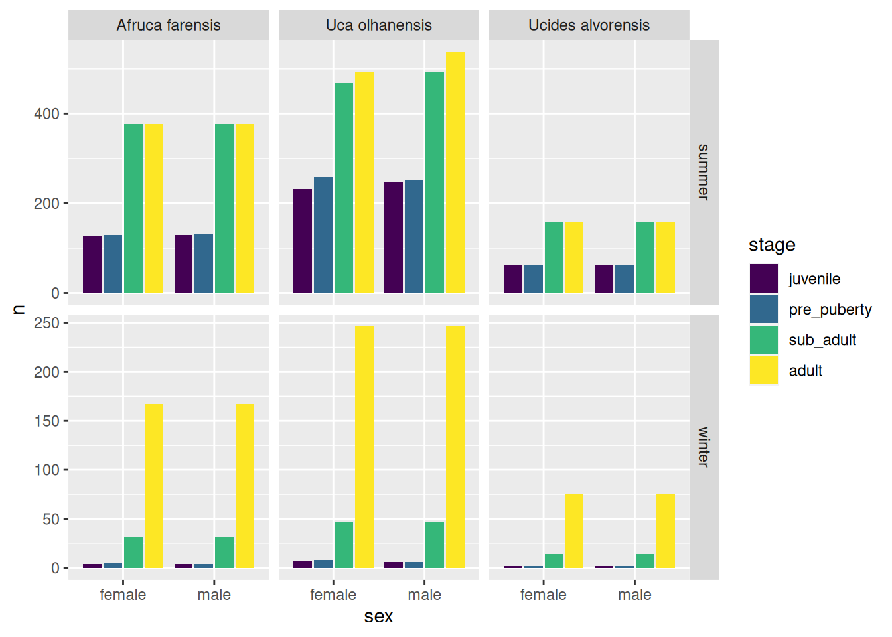
It seems that in the winter season we find mostly adult crabs, followed by a small percentage of sub-adult crabs, and we are very unlikely to find juveniles or pre-puberty crabs.
Perhaps it would be nice to show these percentages instead. The absolute abundances are, after all, influenced by the sampling effort by the marine biologist, and the sampling area of the quadrats.
Exercise 3.9
Use a combination of dplyr::count(), dplyr::group_by() and dplyr::mutate() to create a new variable (i.e. column) for the percentage of crabs within each panel (i.e. species-season combination). Name this new column pct (abbreviation of percentage).
Solution to Exercise 3.9
# To further distinguish the distribution across stages we might want to normalise# with respect to the species-season combination and show a percentage.count(crabs, species, sex, stage, season) %>%group_by(species, season) %>%mutate(pct =100* n /sum(n, na.rm =TRUE)) %>%ggplot(mapping =aes(x = sex, y = pct, fill = stage)) +geom_col(position =position_dodge2(preserve ="single"), na.rm =TRUE) +scale_x_discrete(na.translate =FALSE) +facet_grid(rows =vars(season), cols =vars(species), scales ="free_y")
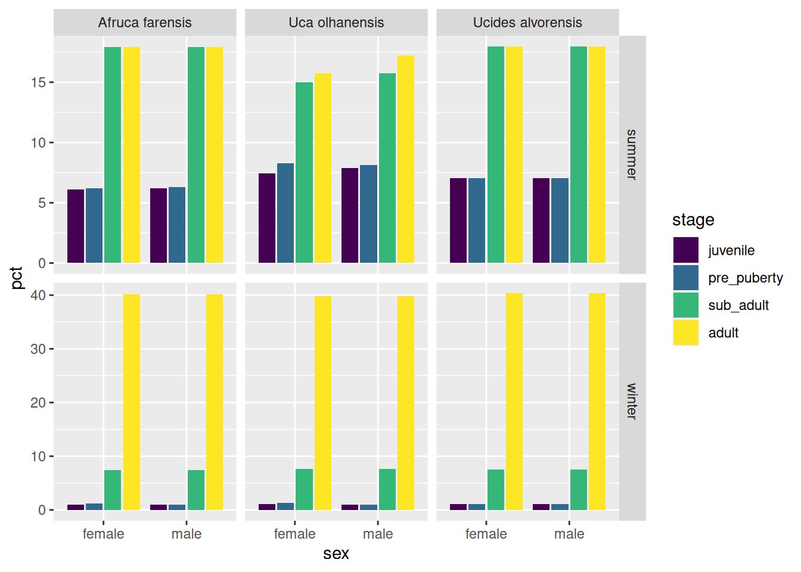
Take a look at the variations below (V1–V3) and pay attention to the small code changes and their effects on the style of the plot.
Let us play around with the colours of the stage scale!
In the previous plots, the colours used to identify the four stages were automatically chosen for us. Note that we already had seen the colours changing when we changed the fill scale using the functions:
scale_fill_ordinal() (previous V2 plot)
scale_fill_hue() (previous V3 plot)
These two functions changed the colours of the fill aesthetic automatically. But we can also change the colors manually. And, yes, you guessed it right, the function to do that will be scale_fill_manual().
So, take the previous example given as V3, and replace it with scale_fill_manual(). You will need to instruct scale_fill_manual() on what colours to use. This function takes a parameter values that accepts a vector of colours. Given that there are four dev. stages, we will need to pass it four colours.
Now, there are several ways of specifying colours. R understands a set of predefined colours by name, i.e. you can pass to values a character vector of colour names. How to find out what colour names are available? We may run the function colours() to find out:
# Note: the american spelling also exists, so `colors()` works just as fine.colour_names <-colours()# Here are the first 10 colour namescolour_names[1:10]
So, choose four of those colours by name, and use them to create a character vector, and pass that vector to the parameter values of scale_fill_manual().
If want to play a bit with different colours, note that you can save the ggplot2 commands to a variable, and then re-use that variable, and add a few extra ggplot2 commands. Confusing? Look at this example:
# I am creating here a variable named `p` (short for plot)# Note that I have removed the `scale_fill_manual()` so the plot will# render with default colours.# p <-count(crabs, species, sex, stage, season) %>%group_by(species, season) %>%mutate(frac = n /sum(n, na.rm =TRUE)) %>%ggplot(mapping =aes(x = sex, y = frac, fill = stage)) +geom_col(position =position_dodge2(preserve ="single"), na.rm =TRUE) +scale_x_discrete(na.translate =FALSE, labels =c("Female", "Male")) +scale_y_continuous(labels = scales::percent) +labs(x ='Crab sex', y ="Population percentage", fill ="Dev. stage") +facet_grid(rows =vars(season), cols =vars(species), scales ="free_y")# When you save a series of ggplot2 commands into a variable, R will not render# the plot in the Plots pane. You have to run the variable in the console to# render your plot. That is what I am doing in the next line.p
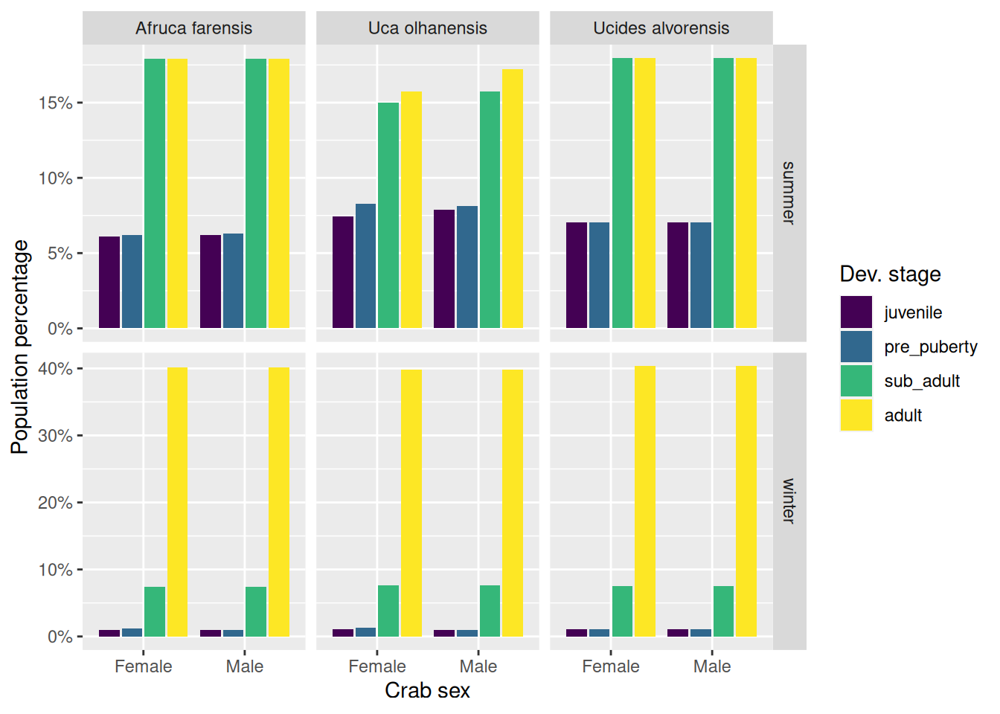
What is nice about having that variable p holding those commands, is that now it is less verbose to make little changes to the plot, as we can reuse p. Look how I am about to use it and change the colours with minimal code:
p +scale_fill_manual(values =c("aquamarine", "aquamarine1", "aquamarine2", "aquamarine3"))
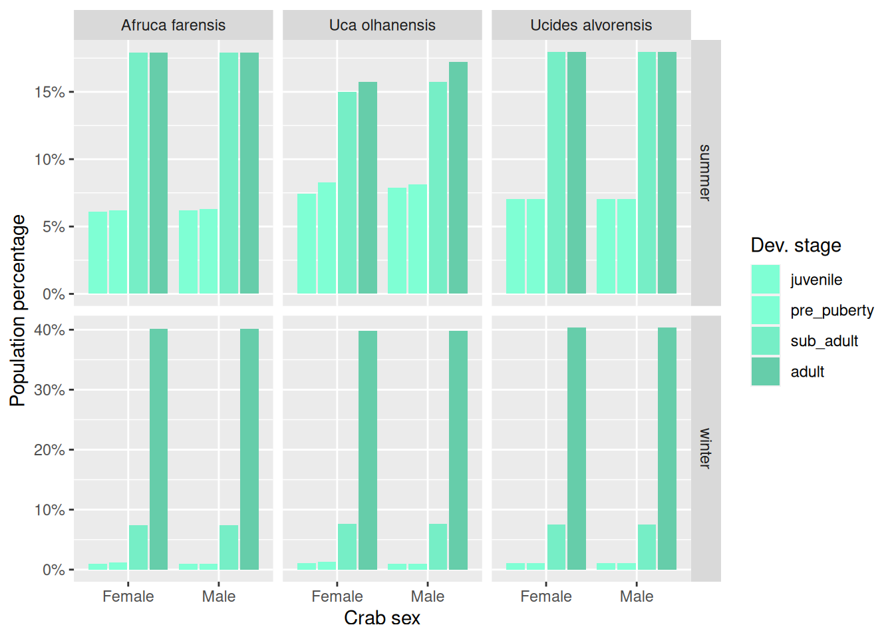
Here is the same plot with a yet another set of colours:
p +scale_fill_manual(values =c("chartreuse", "chartreuse1", "chartreuse2", "chartreuse3"))
Okay, nice! What if I want to have more control over the choice of my colours? We can do that by indicating the hexadecimal code of our colours of interest. These hexadecimal codes are strings that look like this: "#65eab8". You can use these codes instead of the colour names.
Go to https://colorpicker.me/ and pick four colours. Then use those hex codes instead of the colour names:
Please show better taste than me and choose better-looking colours!
Making different plot types
Okay, enough of bar plots! Let us start making other types of plots. To control the type of plot, we use the family of geom_*() functions. In the previous examples we only used geom_col().
There are lots of different plot types, and depending on the variable types, some plot types might be more or less appropriate.
Here is a nice website providing an overview of basic plot types you can make with {ggplot2}: https://r-graph-gallery.com/.
Let us focus now on one of the quantitative variables: carapace_width.
crabs %>%drop_na(sex) %>%ggplot(mapping =aes(x = stage, y = carapace_width, fill = sex)) +geom_violin()
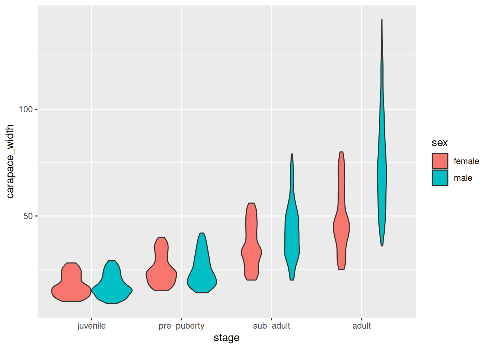
crabs %>%ggplot(mapping =aes(x = carapace_width, fill = sex)) +geom_density(alpha=0.8)
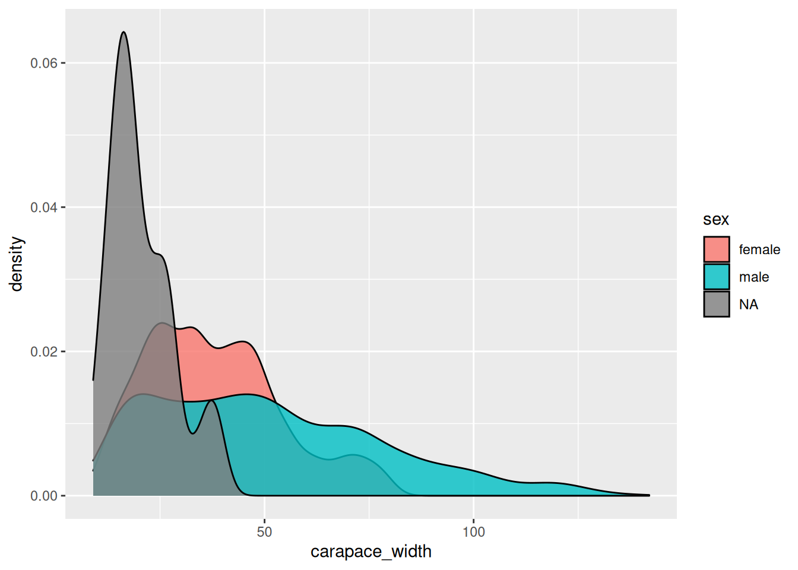
crabs %>%ggplot(mapping =aes(x = carapace_width, fill = sex, col = sex)) +geom_histogram(alpha=0.8, position ='identity')
`stat_bin()` using `bins = 30`. Pick better value with `binwidth`.
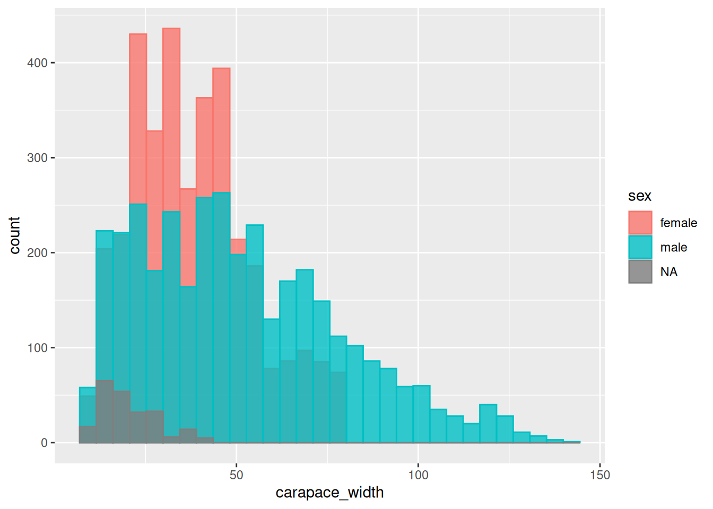
crabs %>%ggplot(mapping =aes(y = carapace_width, fill = sex)) +geom_boxplot()
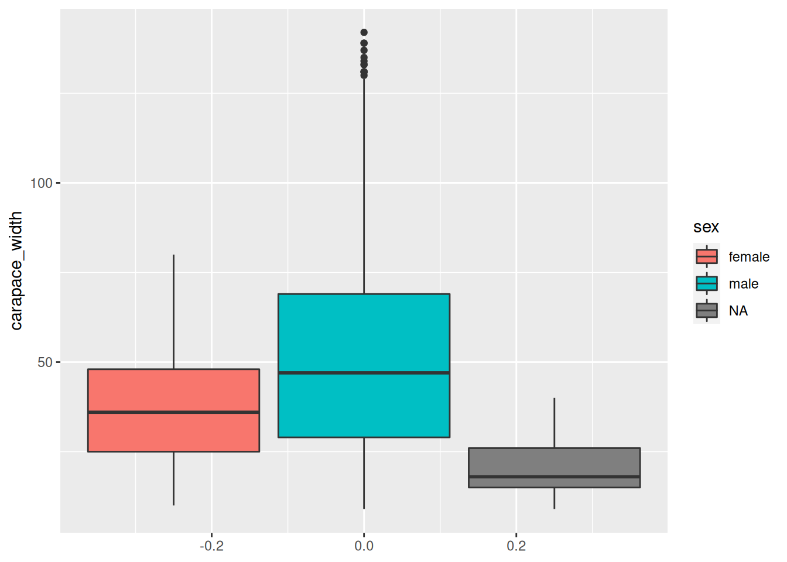
crabs %>%ggplot(mapping =aes(x = carapace_width, fill = stage)) +geom_boxplot()
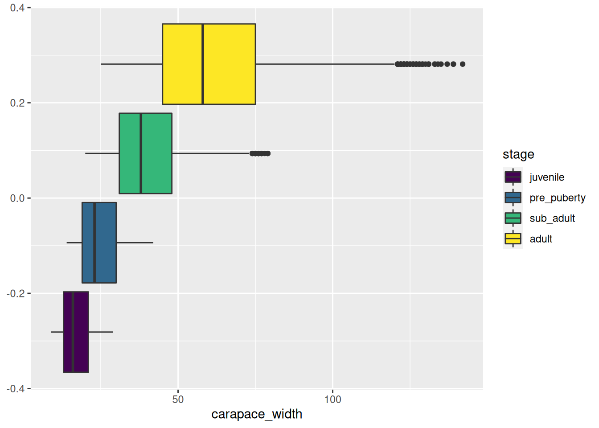
crabs %>% tidyr::drop_na(sex) %>%ggplot(mapping =aes(x = carapace_width, y = stage, fill = stage)) +geom_density_ridges(alpha =0.8)
Picking joint bandwidth of 2.29
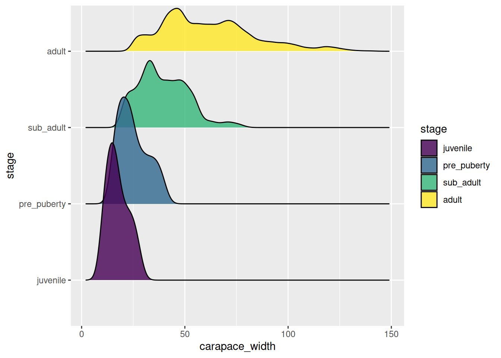
How is the carapace width related to the claw length? Is there dimorphism? What about handedness? Is the asymmetry in claw length across developmental stages?
my_plot <- crabs %>%ggplot(mapping =aes(x = carapace_width)) +geom_point(mapping =aes(y = left_claw_length), col ="red", alpha =0.5) +geom_point(mapping =aes(y = right_claw_length), col ="blue", alpha =0.5) +facet_grid(cols =vars(species), rows =vars(stage)) +ylab("Claw length (mm)") +xlab("Carapace width (mm)")# This command will create a new file named "cl_vs_cw.png" inside the directory# plots/.ggsave(filename ="cl_vs_cw.png", plot = my_plot, path ="plots")# Try exporting to other formats, you just need to change the file extension.ggsave(filename ="cl_vs_cw.pdf", plot = my_plot, path ="plots")# Adjust the plot dimensions using the `width`, `height` and `units` parameters.ggsave(filename ="cl_vs_cw.pdf",plot = my_plot,path ="plots",width =15,height =10,units ="cm")
Mini-project
Creating graphics and plots with {ggplot2} it is not too hard. However, there are many, many options to choose, and so it can feel a bit overwhelming. And it’s impossible to learn every single option in one course. Instead, you should learn where to look for information. Fortunately, the official documentation of {ggplot2} is pretty good.
So the last exercise is a mini-project where you will try to make a figure consisting of a few set of panels. The idea is for you to choose focused research question about the fiddlers crabs data set, and conceptualise a figure and its component plots. So, again, in bullet points:
Decide on question about the crabs data set. Examples: (i) demographics of fiddler crabs; or, (ii) characterisation of crab dimorphism, etc..